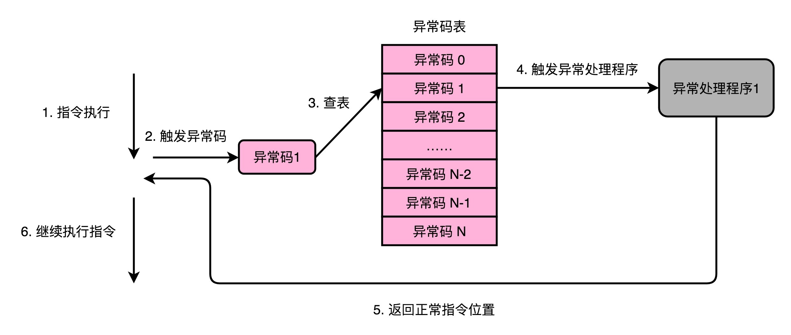
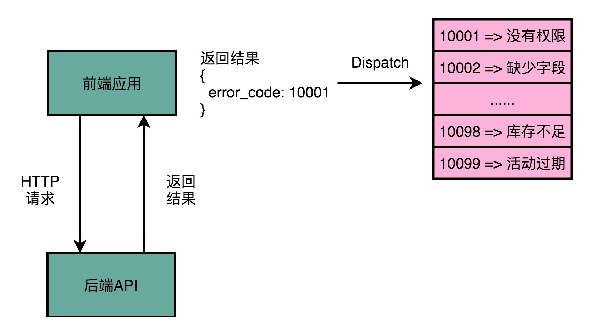
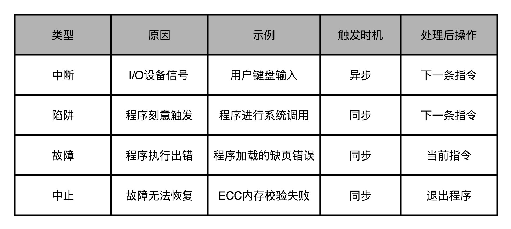

- 00 开篇词 为什么你需要学习计算机组成原理？.md
- 01 冯·诺依曼体系结构：计算机组成的金字塔.md
- 02 给你一张知识地图，计算机组成原理应该这么学.md
- 03 通过你的CPU主频，我们来谈谈“性能”究竟是什么？.md
- 04 穿越功耗墙，我们该从哪些方面提升“性能”？.md
- 05 计算机指令：让我们试试用纸带编程.md
- 06 指令跳转：原来if...else就是goto.md
- 07 函数调用：为什么会发生stack overflow？.md
- 08 ELF和静态链接：为什么程序无法同时在Linux和Windows下运行？.md
- 09 程序装载：“640K内存”真的不够用么？.md
- 10 动态链接：程序内部的“共享单车”.md
- 11 二进制编码：“手持两把锟斤拷，口中疾呼烫烫烫”？.md
- 12 理解电路：从电报机到门电路，我们如何做到“千里传信”？.md
- 13 加法器：如何像搭乐高一样搭电路（上）？.md
- 14 乘法器：如何像搭乐高一样搭电路（下）？.md
- 15 浮点数和定点数（上）：怎么用有限的Bit表示尽可能多的信息？.md
- 16 浮点数和定点数（下）：深入理解浮点数到底有什么用？.md
- 17 建立数据通路（上）：指令加运算=CPU.md
- 18 建立数据通路（中）：指令加运算=CPU.md
- 19 建立数据通路（下）：指令加运算=CPU.md
- 20 面向流水线的指令设计（上）：一心多用的现代CPU.md
- 21 面向流水线的指令设计（下）：奔腾4是怎么失败的？.md
- 22 冒险和预测（一）：hazard是“危”也是“机”.md
- 23 冒险和预测（二）：流水线里的接力赛.md
- 24 冒险和预测（三）：CPU里的“线程池”.md
- 25 冒险和预测（四）：今天下雨了，明天还会下雨么？.md
- 26 Superscalar和VLIW：如何让CPU的吞吐率超过1？.md
- 27 SIMD：如何加速矩阵乘法？.md
- 28 异常和中断：程序出错了怎么办？.md
- 29 CISC和RISC：为什么手机芯片都是ARM？.md
- 30 GPU（上）：为什么玩游戏需要使用GPU？.md
- 31 GPU（下）：为什么深度学习需要使用GPU？.md
- 32 FPGA、ASIC和TPU（上）：计算机体系结构的黄金时代.md
- 33 解读TPU：设计和拆解一块ASIC芯片.md
- 34 理解虚拟机：你在云上拿到的计算机是什么样的？.md
- 35 存储器层次结构全景：数据存储的大金字塔长什么样？.md
- 36 局部性原理：数据库性能跟不上，加个缓存就好了？.md
- 37 理解CPU Cache（上）：“4毫秒”究竟值多少钱？.md
- 38 高速缓存（下）：你确定你的数据更新了么？.md
- 39 MESI协议：如何让多核CPU的高速缓存保持一致？.md
- 40 理解内存（上）：虚拟内存和内存保护是什么？.md
- 41 理解内存（下）：解析TLB和内存保护.md
- 42 总线：计算机内部的高速公路.md
- 43 输入输出设备：我们并不是只能用灯泡显示“0”和“1”.md
- 44 理解IO_WAIT：IO性能到底是怎么回事儿？.md
- 45 机械硬盘：Google早期用过的“黑科技”.md
- 46 SSD硬盘（上）：如何完成性能优化的KPI？.md
- 47 SSD硬盘（下）：如何完成性能优化的KPI？.md
- 48 DMA：为什么Kafka这么快？.md
- 49 数据完整性（上）：硬件坏了怎么办？.md
- 50 数据完整性（下）：如何还原犯罪现场？.md
- 51 分布式计算：如果所有人的大脑都联网会怎样？.md
- 52 设计大型DMP系统（上）：MongoDB并不是什么灵丹妙药.md
- 53 设计大型DMP系统（下）：SSD拯救了所有的DBA.md
- 54 理解Disruptor（上）：带你体会CPU高速缓存的风驰电掣.md
- 55 理解Disruptor（下）：不需要换挡和踩刹车的CPU，有多快？.md
- 结束语 知也无涯，愿你也享受发现的乐趣.md
28 异常和中断：程序出错了怎么办？
过去这么多讲，我们的程序都是自动运行且正常运行的。自动运行的意思是说，我们的程序和指令都是一条条顺序执行，你不需要通过键盘或者网络给这个程序任何输入。正常运行是说，我们的程序都是能够正常执行下去的，没有遇到计算溢出之类的程序错误。
不过，现实的软件世界可没有这么简单。一方面，程序不仅是简单的执行指令，更多的还需要和外部的输入输出打交道。另一方面，程序在执行过程中，还会遇到各种异常情况，比如除以 0、溢出，甚至我们自己也可以让程序抛出异常。
那这一讲，我就带你来看看，如果遇到这些情况，计算机是怎么运转的，也就是说，计算机究竟是如何处理异常的。
异常：硬件、系统和应用的组合拳
一提到计算机当中的异常（Exception），可能你的第一反应就是 C++ 或者 Java 中的 Exception。不过我们今天讲的，并不是这些软件开发过程中遇到的“软件异常”，而是和硬件、系统相关的“硬件异常”。
当然，“软件异常”和“硬件异常”并不是实际业界使用的专有名词，只是我为了方便给你说明，和 C++、Java 中软件抛出的 Exception 进行的人为区分，你明白这个意思就好。
尽管，这里我把这些硬件和系统相关的异常，叫作“硬件异常”。但是，实际上，这些异常，既有来自硬件的，也有来自软件层面的。
比如，我们在硬件层面，当加法器进行两个数相加的时候，会遇到算术溢出；或者，你在玩游戏的时候，按下键盘发送了一个信号给到 CPU，CPU 要去执行一个现有流程之外的指令，这也是一个“异常”。
同样，来自软件层面的，比如我们的程序进行系统调用，发起一个读文件的请求。这样应用程序向系统调用发起请求的情况，一样是通过“异常”来实现的。
关于异常，最有意思的一点就是，它其实是一个硬件和软件组合到一起的处理过程。异常的前半生，也就是异常的发生和捕捉，是在硬件层面完成的。但是异常的后半生，也就是说，异常的处理，其实是由软件来完成的。
计算机会为每一种可能会发生的异常，分配一个异常代码（Exception Number）。有些教科书会把异常代码叫作中断向量（Interrupt Vector）。异常发生的时候，通常是 CPU 检测到了一个特殊的信号。比如，你按下键盘上的按键，输入设备就会给 CPU 发一个信号。或者，正在执行的指令发生了加法溢出，同样，我们可以有一个进位溢出的信号。这些信号呢，在组成原理里面，我们一般叫作发生了一个事件（Event）。CPU 在检测到事件的时候，其实也就拿到了对应的异常代码。
这些异常代码里，I/O 发出的信号的异常代码，是由操作系统来分配的，也就是由软件来设定的。而像加法溢出这样的异常代码，则是由 CPU 预先分配好的，也就是由硬件来分配的。这又是另一个软件和硬件共同组合来处理异常的过程。
拿到异常代码之后，CPU 就会触发异常处理的流程。计算机在内存里，会保留一个异常表（Exception Table）。也有地方，把这个表叫作中断向量表（Interrupt Vector Table），好和上面的中断向量对应起来。这个异常表有点儿像我们在第 10 讲里讲的 GOT 表，存放的是不同的异常代码对应的异常处理程序（Exception Handler）所在的地址。
我们的 CPU 在拿到了异常码之后，会先把当前的程序执行的现场，保存到程序栈里面，然后根据异常码查询，找到对应的异常处理程序，最后把后续指令执行的指挥权，交给这个异常处理程序。

这样“检测异常，拿到异常码，再根据异常码进行查表处理”的模式，在日常开发的过程中是很常见的。

比如说，现在我们日常进行的 Web 或者 App 开发，通常都是前后端分离的。前端的应用，会向后端发起 HTTP 的请求。当后端遇到了异常，通常会给到前端一个对应的错误代码。前端的应用根据这个错误代码，在应用层面去进行错误处理。在不能处理的时候，它会根据错误代码向用户显示错误信息。
public class LastChanceHandler implements Thread.UncaughtExceptionHandler {
@Override
public void uncaughtException(Thread t, Throwable e) {
// do something here - log to file and upload to server/close resources/delete files...
}
}
Thread.setDefaultUncaughtExceptionHandler(new LastChanceHandler());
Java 里面，可以设定 ExceptionHandler，来处理线程执行中的异常情况
再比如说，Java 里面，我们使用一个线程池去运行调度任务的时候，可以指定一个异常处理程序。对于各个线程在执行任务出现的异常情况，我们是通过异常处理程序进行处理，而不是在实际的任务代码里处理。这样，我们就把业务处理代码就和异常处理代码的流程分开了。
异常的分类：中断、陷阱、故障和中止
我在前面说了，异常可以由硬件触发，也可以由软件触发。那我们平时会碰到哪些异常呢？下面我们就一起来看看。
第一种异常叫中断（Interrupt）。顾名思义，自然就是程序在执行到一半的时候，被打断了。这个打断执行的信号，来自于 CPU 外部的 I/O 设备。你在键盘上按下一个按键，就会对应触发一个相应的信号到达 CPU 里面。CPU 里面某个开关的值发生了变化，也就触发了一个中断类型的异常。
第二种异常叫陷阱（Trap）。陷阱，其实是我们程序员“故意“主动触发的异常。就好像你在程序里面打了一个断点，这个断点就是设下的一个"陷阱"。当程序的指令执行到这个位置的时候，就掉到了这个陷阱当中。然后，对应的异常处理程序就会来处理这个"陷阱"当中的猎物。
最常见的一类陷阱，发生在我们的应用程序调用系统调用的时候，也就是从程序的用户态切换到内核态的时候。我们在第 3 讲讲 CPU 性能的时候说过，可以用 Linux 下的 time 指令，去查看一个程序运行实际花费的时间，里面有在用户态花费的时间（user time），也有在内核态发生的时间（system time）。
我们的应用程序通过系统调用去读取文件、创建进程，其实也是通过触发一次陷阱来进行的。这是因为，我们用户态的应用程序没有权限来做这些事情，需要把对应的流程转交给有权限的异常处理程序来进行。
第三种异常叫故障（Fault）。它和陷阱的区别在于，陷阱是我们开发程序的时候刻意触发的异常，而故障通常不是。比如，我们在程序执行的过程中，进行加法计算发生了溢出，其实就是故障类型的异常。这个异常不是我们在开发的时候计划内的，也一样需要有对应的异常处理程序去处理。
故障和陷阱、中断的一个重要区别是，故障在异常程序处理完成之后，仍然回来处理当前的指令，而不是去执行程序中的下一条指令。因为当前的指令因为故障的原因并没有成功执行完成。
最后一种异常叫中止（Abort）。与其说这是一种异常类型，不如说这是故障的一种特殊情况。当 CPU 遇到了故障，但是恢复不过来的时候，程序就不得不中止了。

在这四种异常里，中断异常的信号来自系统外部，而不是在程序自己执行的过程中，所以我们称之为“异步”类型的异常。而陷阱、故障以及中止类型的异常，是在程序执行的过程中发生的，所以我们称之为“同步“类型的异常。
在处理异常的过程当中，无论是异步的中断，还是同步的陷阱和故障，我们都是采用同一套处理流程，也就是上面所说的，“保存现场、异常代码查询、异常处理程序调用“。而中止类型的异常，其实是在故障类型异常的一种特殊情况。当故障发生，但是我们发现没有异常处理程序能够处理这种异常的情况下，程序就不得不进入中止状态，也就是最终会退出当前的程序执行。
异常的处理：上下文切换
在实际的异常处理程序执行之前，CPU 需要去做一次“保存现场”的操作。这个保存现场的操作，和我在第 7 讲里讲解函数调用的过程非常相似。
因为切换到异常处理程序的时候，其实就好像是去调用一个异常处理函数。指令的控制权被切换到了另外一个"函数"里面，所以我们自然要把当前正在执行的指令去压栈。这样，我们才能在异常处理程序执行完成之后，重新回到当前的指令继续往下执行。
不过，切换到异常处理程序，比起函数调用，还是要更复杂一些。原因有下面几点。
第一点，因为异常情况往往发生在程序正常执行的预期之外，比如中断、故障发生的时候。所以，除了本来程序压栈要做的事情之外，我们还需要把 CPU 内当前运行程序用到的所有寄存器，都放到栈里面。最典型的就是条件码寄存器里面的内容。
第二点，像陷阱这样的异常，涉及程序指令在用户态和内核态之间的切换。对应压栈的时候，对应的数据是压到内核栈里，而不是程序栈里。
第三点，像故障这样的异常，在异常处理程序执行完成之后。从栈里返回出来，继续执行的不是顺序的下一条指令，而是故障发生的当前指令。因为当前指令因为故障没有正常执行成功，必须重新去执行一次。
所以，对于异常这样的处理流程，不像是顺序执行的指令间的函数调用关系。而是更像两个不同的独立进程之间在 CPU 层面的切换，所以这个过程我们称之为上下文切换（Context Switch）。
总结延伸
这一讲，我给你讲了计算机里的“异常”处理流程。这里的异常可以分成中断、陷阱、故障、中止这样四种情况。这四种异常，分别对应着 I/O 设备的输入、程序主动触发的状态切换、异常情况下的程序出错以及出错之后无可挽回的退出程序。
当 CPU 遭遇了异常的时候，计算机就需要有相应的应对措施。CPU 会通过“查表法”来解决这个问题。在硬件层面和操作系统层面，各自定义了所有 CPU 可能会遇到的异常代码，并且通过这个异常代码，在异常表里面查询相应的异常处理程序。在捕捉异常的时候，我们的硬件 CPU 在进行相应的操作，而在处理异常层面，则是由作为软件的异常处理程序进行相应的操作。
而在实际处理异常之前，计算机需要先去做一个“保留现场”的操作。有了这个操作，我们才能在异常处理完成之后，重新回到之前执行的指令序列里面来。这个保留现场的操作，和我们之前讲解指令的函数调用很像。但是，因为“异常”和函数调用有一个很大的不同，那就是它的发生时间。函数调用的压栈操作我们在写程序的时候完全能够知道，而“异常”发生的时间却很不确定。所以，“异常”发生的时候，我们称之为发生了一次“上下文切换”（Context Switch）。这个时候，除了普通需要压栈的数据外，计算机还需要把所有寄存器信息都存储到栈里面去。
推荐阅读
关于异常和中断，《深入理解计算机系统》的第 8 章“异常控制流”部分，有非常深入和充分的讲解，推荐你认真阅读一下。